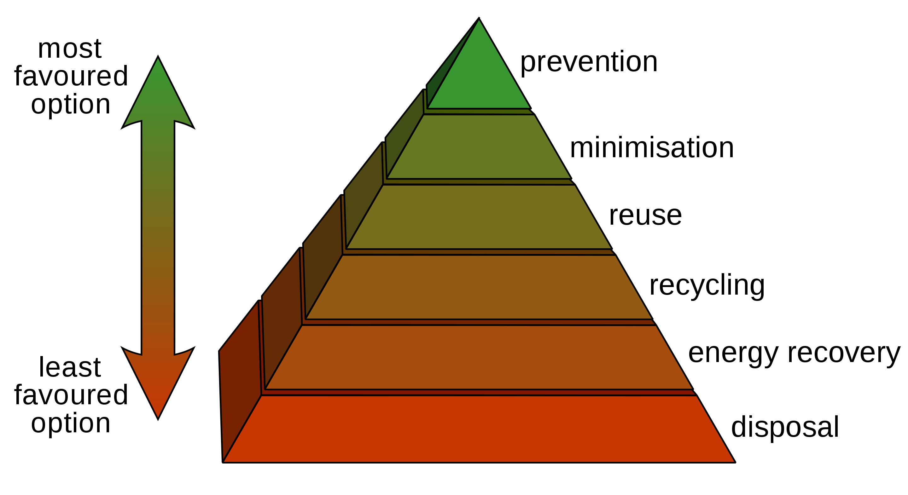
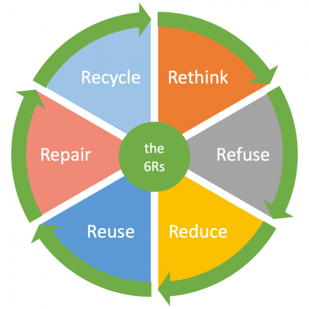

Some common materials that can be recycled are paper, glass and plastics. Recycling is good for the environment in a few ways. It reduces the amount of trash and garbage that needs to be disposed of in places like landfills. Products from recycled materials usually use less energy to make.
One way you can be good to the environment is by reusing items rather than getting something new. When you reuse something, you reduce waste, first by not disposing of the thing you are reusing, second by not creating or paying someone else to create a replacement item, and third by not needing to dispose of the replacement after it's used.
When you can reduce the resources you use, it's even kinder to the environment than reusing or recycling. In addition to being better for the environment, reducing your use of resources tends to have a good effect on your personal budget. It can also produce other personal benefits—in some cases, a more efficient or longer lasting product can save your time and effort too.